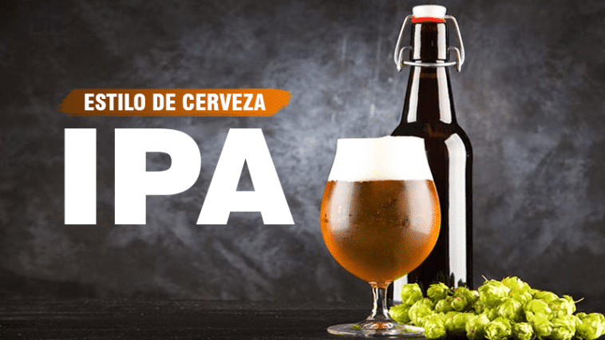
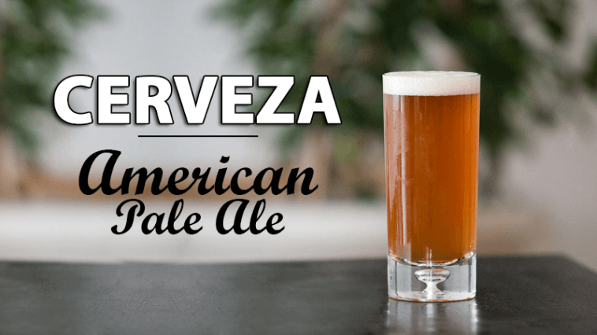
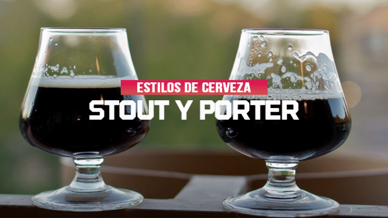
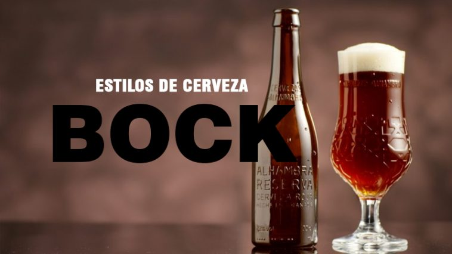
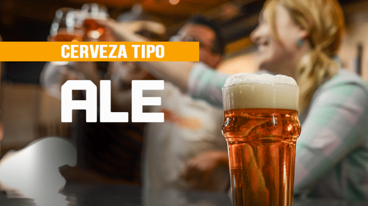
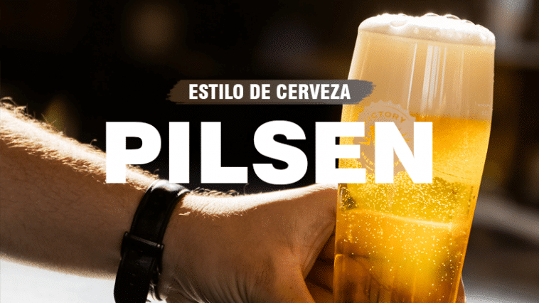
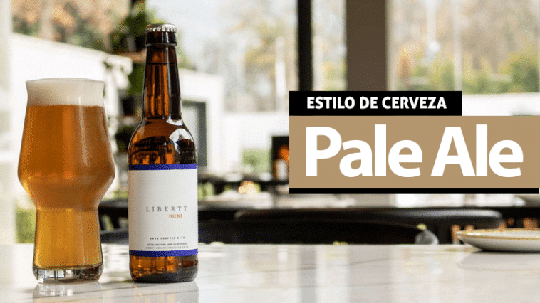

Lager
Las características de cervezas lagers pueden ser muy variadas, los colores pueden ser muy variados. Si nos dicen «dibuja una cerveza» seguramente dibujaremos un del tipo Lager, ya que la cerveza como la conocemos en nuestra cabeza es, en la mayoría, de color dorado, o naranja claro, y con un espuma blanca, pero los colores y características de este tipo no quedan acá. Es así que las diferencias de las Lager dan lugar a los distintos estilos dentro de esta familia, que si hablamos de colores van desde claras cristalinas a oscuras negras.
Utilizan levadura del tipo Saccharomyces uvarum.
Se elaboran a temperaturas que van de los 0°c a los 4°c, aun que pueden haber variaciones significativas.
Suelen ser ligeras, espumosas, y suaves.
Se acostumbra a servir mas fría que las tipo Ale, entre 3°c y 7°c aprox.
Son de fermentación baja.
India Pale Ale

El desarrollo de las IPA dio lugar a la medición de la amargura en las cervezas, lo que se conoce como IBU, una forma estandarizada para saber que tan amarga es nuestra cerveza, esto lo determina principalmente los distintos tipos de lúpulos que se utilizan en la elaboración de la cerveza.
Hace varios años este estilo de cerveza esta muy de moda en la mayorías de las cervecerías alrededor del mundo, éstas dedican grandes esfuerzos en su elaboración.
Para apreciar bien sus aromas y sabores, nosotros particularmente, aconsejamos beberla entre unos 9°c y 12°c.
.De color pálido anaranjado, similar al ambar, puede ser de menor o mayor intensidad.
Elaboradas con tipo de fermentación alta.
El porcentaje de alcohol ronda los 5.1% y 7.6%.
Gran aporte de lúpulo, lo que proporciona un grado de amargor mayor.
Presentan una serie de sabores particulares y matices aromáticos.
American Pale Ale

La cerveza American Pale Ale (APA) es la versión americana de su homónima Indian Pale Ale (IPA). Las estas dos cervezas se elaboraban con mayor cantidad de lúpulo para poder trasportada de un continente a otro durante periodos de tiempo muy largos.La gran diferencia entre estas dos cervezas es que en la American Pale Ale se usan lúpulos americanos. Estos lúpulos americanos dejan algo menos de amargor, teniendo un IBU un poco más bajo que la IPA.
Stout y Porter

Porter es más ligera en cuerpo y alcohol en comparación con la Stout. Presenta bastante carácter a chocolate procedente de cebada malteada muy tostada, y suelen ser secas. Stout acostumbran a ser mas pesadas en cuerpo, con mas de un foco en café tostado y sabores de malta de cebada tostada, mas que las Porter. Algo que también diferencia una de otra, es el color, estas son mucho mas oscuras, prácticamente negras, con espuma mas densa. Hay quienes dicen que simplemente el lugar de origen es su principal diferencia, Porter es originaria de Londres, mientras que Stout nace en Irlanda, pero esto no queda aquí, claramente.
Las Stout se pueden clasificar como unas cervezas Ale con mas cuerpo y graduación de alcohol que las Porter.
Bock

Bock es un estilo de cerveza centroeuropeo nacido en Alemania, tradicional y perdurable en el tiempo. Estas cervezas calificadas como “lager fuertes”, casi siempre tirando a oscuras, solían elaborarse hacia finales del otoño y almacenarse en barriles de madera, en los «lagered» o bodegas durante todo el invierno, hasta su consumo ya con la llegada del buen tiempo. Son de baja fermentación aunque también destacan un rango de cervezas de fermentación alta que entran en la categoría. Resaltan por sus tonalidades de color, desde dorado a ámbar, pasando por rojizo hasta café.
Ale

Las Ales conforman un tipo de fermentación ampliamente extendido por el mundo. Su origen data de la época medieval (aunque no se conocía el proceso de fermentación ni la levadura), donde constituían una importante fuente de nutrientes y forma de hidratación. Con levadura de alta fermentación, también conocida como Saccharomyces cerevisiae. Esta levadura tiene tendencia a desarrollar su actividad en la parte alta de los tanques de fermentación, para después descender al fondo cuando se detiene su actividad y finaliza el proceso. Junto a las lager y las cervezas de fermentación espontánea, las cervezas Ale son uno de los tres tipos de fermentación de los que forman parte todas las cervezas del mundo.
Pilsen

El nombre de este estilo de cerveza perteneciente a la familia Lager viene de la variedad de cebada malteada que se emplea para su elaboración, la malta Pilsen. En cualquier parte del mundo donde se fabrique una cerveza Pilsen se utiliza este tipo de malta que le confiere el color dorado y un toque dulce a pan o galleta. Hoy en día Pilsen es el estilo de cerveza que se produce en mayor cantidad y por tanto el más consumido en todo el mundo. Su baja graduación y su cuerpo ligero hacen a esta cerveza fácil de beber y adecuada para casi todos los paladares
Pale Ale

Cuando nos referimos a la cerveza Pale Ale lo hacemos a una denominación que engloba diferentes tipos de cervezas. Su origen es inglés y las encontramos en varios países con diferentes nombres y marcas. El origen de esta cerveza data del año 1790 cuando los ingleses crearon sus colonias y viajaban alrededor del mundo. Al ver que la cerveza que traían de Inglaterra no se conservaba bien en lugares muy cálidos se decidió elaborarla en el propio lugar. Son cervezas de mayor calidad, menos amargas, sobretodo las inglesas, y un poco más densas. Su concentración alcohólica suele ser entre un 4 y un 5%. Dependiendo de las variedades predominarán distintos matices, como el lúpulo en las cervezas IPA (India Pale Ale) o el aroma en las American Pale Ale (APA).